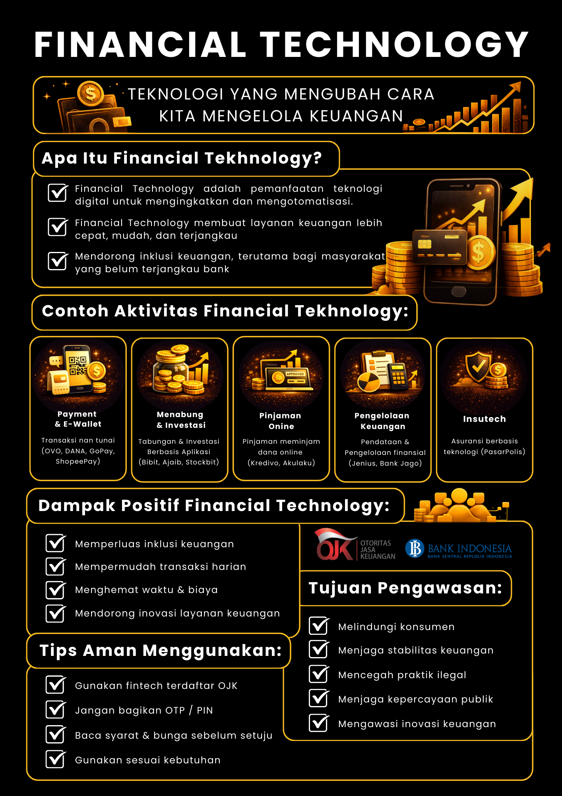

Infografis
Ringkasan Cepat Financial Technology
Infografis membantu Anda menangkap poin-poin penting dengan cepat. Setelah memahami dasar lewat Video dan Modul, gunakan halaman ini sebagai ringkasan visual sebelum mencoba kuis atau simulasi.
Infografis Utama
Financial Technology
Infografis ini merangkum Financial Technology secara menyeluruh: mulai dari definisi dan jenis layanannya (pembayaran digital, pinjaman, investasi, asuransi, hingga layanan pendukung UMKM), contoh aktivitas yang sering ditemui sehari‑hari, dampak positif bagi akses dan efisiensi keuangan, serta risiko yang perlu diwaspadai seperti penipuan, pencurian data, dan penyalahgunaan identitas. Anda juga akan melihat tips keamanan praktis dan gambaran peran pengawasan agar penggunaan Financial Technology tetap aman, bertanggung jawab, dan sesuai regulasi.
